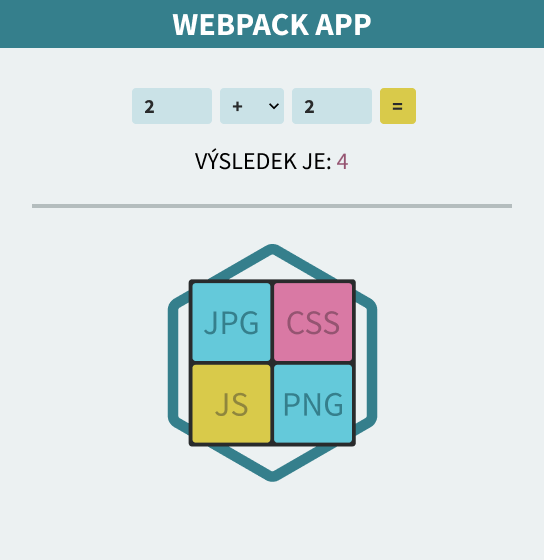

Instalace
V minulé části jste se dozvěděli co to Webpack je a k čemu slouží. V této části si jej nainstalujeme, což je vlastně jen jeden příkaz.
Stažení startovního kódu
Nebudeme si vytvářet žádnou aplikaci, ale přidáme si Webpack do již existující aplikace, kterou jsem pro tento tutoriál vytvořil. Díky tomu se budeme moci soustředit jen na Webpack a ne na věci okolo. Jedná se o jednoduchou kalkulačku. Startovní kód si můžete stáhnout kliknutím na tlačítko níže.
Po stažení si můžete aplikaci spustit. V kořenové složce se nachází soubor index.html, který si můžete otevřít. Musíte si jej ale otevřít ve webovém serveru, jelikož se v aplikaci používají JS moduly a většina prohlížečů blokuje jejich načítání. Po spuštění byste měli vidět jednoduchou kalkulačku, kterou ukazuje následující obrázek.
Kód aplikace je celkem jednoduchý, ale i tak nemusíte moc bádat nad tím jak to funguje. Důležité je, že máme něco s čím můžeme pracovat. V kořenové složce se nachází soubor index.html, package.json a složky less a assets. Ve složce less jsou napsány CSS styly prostřednictvím preprocesoru LESS. Pro jejich převedení do CSS souboru se v package.json momentálně nachází skript "compile:less". Později tuto operaci necháme na Webpacku. Ve složce assets máme složky css, img a js. Složka js obsahuje JavaScriptové soubory, složka img obrázek a složka css kaskádové styly. Abychom nepoužívali jen preprocesor LESS, tak jsem se do složky css rozhodl přidat ještě klasický CSS soubor pojmenovaný jako header.css. Jeho úkolem je jen nastylovat header aplikace.
Instalace Webpacku
Instalace Webpacku jako všech jiných balíčků přes NPM je velmi jednoduchá. Potřebujeme nainstalovat jen balíček webpack, který představuje samotný Webpack a balíček webpack-cli, což je command line interface pro Webpack.
npm install --save-dev webpack webpack-cliV této části jste si stáhli aplikaci, do které budeme v příštích částech přidávat Webpack. Také jste Webpack nainstalovali, což byla otázka jednoho příkazu.